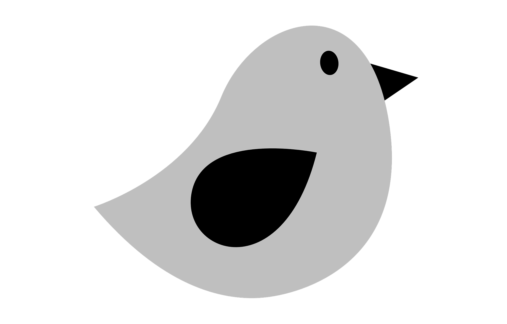

Check Out Some of My Works.


My Data
In production. Android application to manage private information. All your data will be stored encrypted in the database of your device so you are the only one who can access them. Keep your private information secure!
Security, Android

Twitbot for Reminders
In production. Twitbot written in Python in order to twit preconfigured reminders. It allowed me to use Python in a personal project and the Twitter API.
Twitter, Python
FitoChina
Developing phase. Android application that serves as a consultation on topics of Chinese herbalism for experts in Traditional Chinese Medicine
Health, Android
Patient File
Developing phase. Web application to manage information about patients.
Webapp, Java